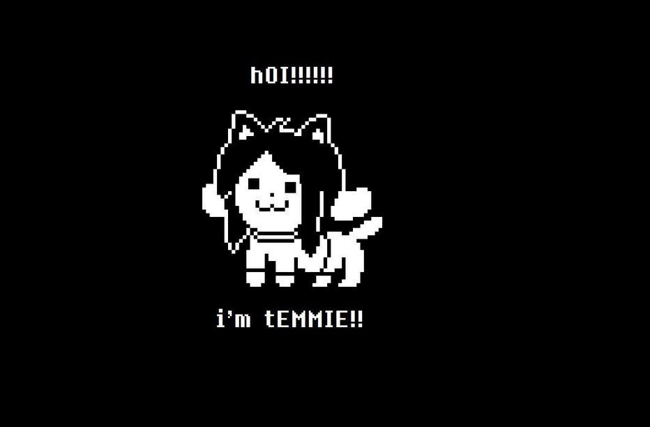

* Ролевая видеоигра, разработанная американским программистом и композитором Тоби Фоксом. Игрок управляет ребёнком, который случайно упал в яму и попал в подземелье, в большой изолированный от людей мир. В попытках вернуться домой игрок встречает множество различных существ, некоторые из которых относятся к нему враждебно. Во время битвы игрок управляет маленьким сердцем, которое символизирует душу героя; избегая атак противника в стиле «Bullet Hell», игрок может убить нападавшего или пощадить, что впоследствии будет влиять на концовку. Также на концовку влияет взаимодействие с иными персонажами вне сражения.
Об игре на Википедии 